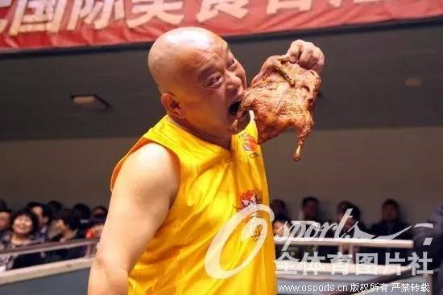
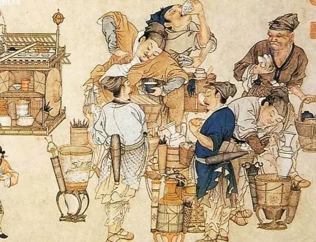

【干货分享】中国饮食历史文化
来源： 茅塞盾开
在中国，开门七件事：柴米油盐酱醋茶。无一不是与饮食有关，饮食是人们生活最为重要的一件事。中华民族拥有悠久的历史文明，伴随着我们漫长的历史，中国的饮食文化同样博大精深、源远流长。
【注意：浏览以下内容，请自备纸巾，以免哈喇子流到手机屏幕上。】
中国的饮食文化，大致可以分为六个阶段。
一、上古时期
这个阶段是夏商周之前历史时期。这个时期，我们先民的饮食仅仅停留在填饱肚子充饥的阶段，还谈不上什么餐饮文化，甚至连调味料都没有。
1、人文始祖燧人氏之前
之所以选择燧人氏作为一个分界点，是因为燧人氏发明钻木取火后，我们的先祖才开始吃熟食，之前还处于茹毛饮血的生活水平。随着人们能够掌控火种，慢慢产生了一系列烹饪方法，大致有：
炮：直接将食物放火里面煨熟。
煲：用泥巴裹住生食后烧（有点像今天叫花鸡的做法）
煮：用石器盛水、食物，放火上煮熟。
焙炒：把石头片烘烤热后，把吃的放上面继续烘焙。
在仅有石器的那个年代，我们的先民就是凭借一点点原生态的工具，制作一些简单的食物让自己不至于挨饿。如果遇上气候不好、食物短缺的时节，他们每天最大的问题也许就是下顿饭在哪里？
2、人文始祖伏羲氏
这个时候，伏羲已经开始教部落的人如何去渔猎。渔猎就需要外出，外出就需要辨别方向，还要考虑天气、地势等诸多因素。于是伏羲的先天八卦问世了。凭借伏羲先天八卦，人们敢于远行，也能获得更多食材，饮食方面逐渐丰富起来。
3、人文始祖神农氏
神农是历史上一位非常了不起的氏族，是中华民族农业、医药业的先驱，通过自己亲自试验，神农发现了很多植物的种子可以供人们作食物，还发明了一些劳动工具。一些简单的炊具也出现并为人们使用。人们的生活条件得到极大的改善，有了农业生产，就有了稳定的食物来源。
4、五帝时期
即黄帝、颛顼、帝喾、尧、舜
经过五位上古时期杰出首领的励精图治，大力发展生产，轩辕黄帝的功绩之一是“艺五种”。“五种”，是指“黍、稷、菽、麦、稻”五谷。今天，人们常用五谷丰登来表示粮食丰收。五谷种植，始于黄帝时期。颛顼时期制定了历法；帝喾时期，制定了节气；尧时期制定了农耕时令；舜更是任命后稷掌管农业生产。这时候，大量陶制的炊具开始使用，人们烹制食物的手法开始多种多样。
二、夏商周时期
1、夏代开国君主大禹，是中华民族历史上一位了不起的帝王。他曾率领人们治理了黄河水患，是第一位向大自然挑战并使人们与大自然和谐共处的英雄。通过治理水患，人们的农业生产有了更好的保障。
夏代时期，青铜器开始应用于人们的生活中。这时期的青铜器主要用作食器。人们除了进行农业生产，也开始大量的狩猎、打渔，食材更加丰富。传说夏王启曾经在钧台召开大会，招待四面八方的部落首领，宴席上已经出现山珍海味，极其奢华。
畜牧业也开始发展起来。商族首领王亥就是一位畜牧业专家，擅长饲养羊、猪、牛、马等，而且还是一个美食家，《山海经》里面有记载“有人曰王亥,两手操鸟,方食其头。”这是个不折不扣吃货的状态。
2、 商汤时期，他的辅佐大臣伊尹前身就是干厨子的，后来是作为有莘氏公主的陪嫁奴隶，来到了成汤麾下。某次，他为成汤做了一顿天鹅肉（鹄羹），让成汤吃出了情怀，立马召见他。伊尹进一步讲出了“以鼎调羹”“调和五味”等高明理论，很快成为成汤的座上宾，随后被任命为宰相，帮助成汤灭掉残暴的夏桀王统治，建立商朝。伊尹的先进事迹，看成先秦时期最为经典的逆袭案例。
抛开伊尹在政治、军事上的才华不说，单是他在饮食方面的造诣，就非常深厚，他对成汤王这样讲道：“肉类：水中的有腥味，食肉动物肉臊，食草动物肉膻，要使这些肉成为美味，水是第一重要，其次用甜、酸、苦、辣、咸，臭的、恶的、莸草、甘草五种味道多种调料，谁先加谁后加，谁多谁少，很有讲究。火候很关键，快慢缓急掌握好，能很好去除腥味，去掉臊味，减少膻味。美味全由鼎中精妙的变化而产生，只能意会不能言传，就象射箭驾马，阴阳变化，四季规律那样，须花费时间，多多实践，细心观察体会。掌握了其中的奥妙，制出的肉就会熟而不烂、香而不薄、肥而不腻，五味恰到好处”。
伊尹还给成汤王介绍了一大堆美食，足以拍摄好多集《舌尖上的商朝》。他说，最美味的肉有：猩猩的唇，熊獾的掌，燕雀的尾肉、述荡的蹄筋，旄象的腰，流沙之西、丹山之南凤鸟的蛋。美味的鱼有：洞庭鳆鱼、东海鲕鱼，醴水的朱鳖，六只脚，有百串透明的珠子。灌水的鳐鱼，象鲤鱼却长着飞翼，经常从西海夜飞，游于东海。菜中的美味有：昆仑山上的灵芝，寿木的花。指姑东边中容国有红木黑木的叶子。南极石崖上青色的嘉树菜。阳华山的芸菜，云梦泽的芹菜，具区泽的菁，浸渊的土英。调和味道的美味调料有：阳朴的姜，招摇的桂，越骆的菌，膻鱼的酱，大夏的盐，宰揭的露，长泽雪白如玉的卵石。做美味饭食的粮食有：玄山的禾麦，不周山的小米，阳山的黄黍，南海的黑米。最好的水有：三危山的露水，昆仑山的井水，沮江丘陵的摇水，曰山的水。高泉山的涌泉，是冀州的水源。美味的水果有：沙棠的果。常山之北投渊的上游有百果，是君王们爱吃的。箕山东边的青岛，有甘甜的栌，江浦的桔子，云梦的柚子，汉水的石耳。
不知道成汤是不是流着哈喇子听完这段讲述的。
伊尹在饮食方面的深厚造诣，被后世尊称为中国烹饪之圣，所有吃货都应该朝拜一下他老人家。
商代食器、酒器
根据考古出土的大量商代食器如簋、簠、豆和酒器如爵、斝、尊、觚，可以推想，商代已经出现规模较大的宴席活动。
3、周代的肉类加工更为考究。而且已经出现多种调味料。
周代《周礼﹒天官》已经出现“八珍”一词：“珍用八物”、“八珍之齐”。其具体内容，据注文是指《礼记》所列：淳熬（肉酱油浇饭）、淳母（肉酱油浇黄米饭）、炮豚（煨烤炸炖乳猪)、炮羊（煨烤炸炖羔羊）、捣珍（烧牛、羊、鹿里脊）、渍珍（酒糖牛羊肉）、熬珍（类似五香牛肉干）和肝辽（网油烤狗肝）八种食品（或者认为是八种烹调方法）。另说“珍用八物”是指牛、羊、麋、鹿、马、豕（猪）、狗、狼。周代“八珍”的出现，标志着烹饪形成为一门重要的艺术，显示了周人的精湛技艺和食饮的科学性。
图片来自网络，周八珍
春秋战国时期，各个民族的互相融合，在饮食文化上逐渐形成了南北两大风味。在北方，古齐鲁饮食文化历史悠久，烹饪技术比较发达，形成了中国最早的地方风味菜——鲁菜的雏形。
在南方，楚人统一了东南半壁江山，占有今天的“鱼米之乡”。“春有刀鲚，夏有鲥，秋有肥鸭，冬有蔬”。一年四季，水产畜禽菜蔬联蹁上市，为烹饪技术发展提供了优越的物质条件。由于又融汇了南方很多民族的民风、民俗和饮食习惯，逐渐形成了今天苏菜的雏形。
在西边，秦国占领了古代的巴国、蜀国，接着派李冰将水患之乡改造成“天府之国”，加之有大批汉中移民的到来，结合当地的气候、风俗以及古代巴国、蜀国的传统饮食，产生了至今影响巨大的川菜的前身。
秦国的统一大业进行到后期，秦末发兵兼并桂林、南海和象三郡，建立南越国。汉高祖十一年受封为南越王。利用广州地处东南沿海，珠江三角洲气候温和，物产丰富，可供食用的动植物品种繁多，水陆交通四通八达的优势，建立了岭南的政治、经济、文化中心。这里饮食比较发达，目前广东的饮食文化，其实就是由赵佗将中原地区先进的烹饪艺术和器具引入岭，结合当地的饮食资源，使“飞、潜、动、植”皆为佳肴，并流传至今，形兼收并蓄的饮食风尚，产生了粤菜。
至此，后称“四大菜系”的鲁菜（包括京津等北方地区的风味菜）、苏菜（包括江、浙、皖地区的风味菜）、粤菜（包括闽、台、潮、琼地区的风味菜）、川菜（包括湘、鄂、黔、滇地区的风味菜）雏形已经初成。
三、秦汉魏晋南北朝
1、秦汉时期
随着中华民族大统一的形成，强大的汉王朝在饮食方面比先秦时期更进一步，汉朝皇帝已经有了完善的食物管理系统，皇帝甚至可以吃到很多反季节食物。普通百姓食物供应更加丰富、充足。随着丝绸之路的开辟，很多西域的食物胡瓜、胡桃、胡荽、胡麻、胡萝卜、石榴等进入中原，中原的、李、杏、梨、姜、茶叶等物产以及饮食文化也传到了西域。今天我们日常吃的蔬菜，大约有160多种。中原地区原产和外域进入的几乎各占一半。
2、魏晋南北朝时期，面食开始进一步在民间推广。传说诸葛亮征讨孟获归来，祭祀阴兵，曾以面食包肉，做馒头。随着大批西北游牧民族进入中原，胡羹、胡饭、胡炮、烤肉、涮肉等食法开始影响人们的饮食习惯。
四、唐宋时期
唐宋时期作为中国封建王朝的最高峰，其饮食文化发展到一个新的高度。
1、唐代的长安是当时世界文化的中心，为各民族饮食文化的交流与融合提供了便利。这时候的烹饪方法明显增多，制作方法更加精良，品种更丰富。无论是高中低档菜肴，对鱼类、肉类的使用明显增多。
最著名的当属唐代烧尾宴，有记载最奢侈的一次烧尾宴是韦巨源在唐中宗景龙二年（7O8）“官拜尚书左仆射”时为敬奉中宗而举办的，仅留下来的菜名达58种。如面点有“单笼金乳酥”、“曼陀样夹饼”、“巨胜奴”（酥蜜寒具）、“贵妃红”（加味红酥）、“婆罗门轻高面”（笼蒸）、“生进二十四气馄饨”（花形、馅料各异）、“见风消”（油浴饼）、“水晶龙凤糕”、“汉宫棋”、“天花 ”、“素蒸音声部”、“生进鸭花汤饼”等等，菜肴则有“白龙 ”（治鳜肉）、“乳酿鱼”、“葱醋鸡”（入笼）、“吴兴连带 ”、“八仙盘”(剔鹅作八副）、“仙人脔”（乳沦鸡）、“箸头春”（炙活鹑子）、“五生盘”、“遍地锦装鳖”（羊脂、鸭卵脂副）、“汤浴绣丸”（肉糜治，隐卵花）等等。这些从一个侧面反映了唐代饮食文化的发达。
2、到了宋代，人们的饮食结构发生了较大变化，蔬菜、素食开始增多，面饼逐渐丰富起来。粥类也大量出现。肉食中，消耗较多的是羊、其次是猪肉。由于官府的禁令，牛肉非常少见（《水浒传》里动辄五斤牛肉一坛酒的大侠套餐貌似不太确切，也许是作者按照明代的生活风貌描写的）另外还有鸡鸭鹅、兔等家禽野味。江河湖海的水产品取之不尽，用之不竭。螃蟹、虾、蛙类等水产品也被大量食用。甚至还有拼死吃河豚的记载。果品类有记载的也有几十种。汤药在宋代很普及，有记载的有二陈汤、木星汤等。
另外一个重要变化就是，饮食业结构的兴旺发达，北宋初年，宵禁完全解除。城市居民的夜间生活更加丰富起来，许多人养成了晚上再吃一顿的习惯。开封的饮食业大致包括酒楼、食店、饼店、茶肆。
五、元明清
1、到了元朝，帝国的疆域发展到前所未有的广大，也带来了饮食文化的广阔发展。这一时期，涮羊肉在忽必烈的推捧下诞生；月饼，已经成为中秋不可少的一道点心；元大都成为有史可考的第一家烤鸭店的发源地；产生了至今众人都愿意品尝的名菜——烤全羊。
而蒙古人西征以及元朝时期以各种身份从波斯、中亚细亚和阿拉伯等地大批签发或自愿东来的各族穆斯林，与当地民族融合成为了元朝的一个新的民族——回族，并与其他穆斯林民族创造和发展了中国的清真饮食文化。
2、明代由于开国皇帝朱元璋出身安徽，所以主流的菜系是淮扬风味。与此同时，大量的食材再次进入中国，比如番茄、辣椒、南瓜、甘薯、玉米、大蒜等。在烹饪技术上，明代与两宋相比也有了很大的进步，更加规范，有烧、蒸、煮、煎、烤、卤、摊、炸、爆、炒、炙等。
由于明代江南地区手工业、商业的发展，商人经商致富后对于美食的需求更为强烈，对于食物的烹饪制作更加奢华。文人、士大夫对个性的解放、对生活的追求，使得他们在饮食上也是别出心裁。明代饮食内容更加丰富多彩，而且更加追求精致化、艺术化。从养生到尊生。到了明代末期，中国饮食分为京式、苏式和广式。京式偏咸，苏式、广式偏甜。
3、清代时期，满族的主食开始进入中原。启主食主要是面食，比如各种甜品、糕点类。满族菜肴也以肉食为主，多采用烧烤、蒸煮、炒炸等烹调方法。满族皇帝多少火锅爱好者，这也是大江南北火锅盛行的一个原因。满族人也喜欢吃卤味、腌制食品。
随着满族饮食文化与汉族饮食文化的融合，烹调技艺更加多样化、操作方法也更加多样化。
满汉饮食文化融合的巅峰当属满汉全席。满汉全席起兴于清代，是集满族与汉族菜点之精华而形成的历史上最著名的中华大宴。满汉全席以东北·、山东、北京、江浙菜为主。世俗所谓“满汉全席”中的珍品，其大部分是黑龙江地区特产（或出产）：如犴鼻、鱼骨、鳇鱼子、猴头蘑、熊掌、哈什蟆、鹿尾（筋、脯、鞭等）、豹胎以及其他珍奇原料等。后来闽粤等地的菜肴也依次出现在巨型宴席之上。南菜54道：30道江浙菜，12道闽菜，12道广东菜。北菜54道：12道满族菜，12道北京菜，30道山东菜。
六、民国时期
民国开始，中国各地的文化有了相当大的发展。苏式菜系分为苏菜、浙菜和徽菜。广式菜系分为粤菜、闽菜，川式菜系分为川菜和湘菜。因为川、鲁、粤、苏四大菜系形成历史较早，后来，浙、闽、湘、徽等地方菜也逐渐出名，就形成了中国的“八大菜系”。
除八大菜系外还有一些在中国较有影响的菜系，潮州菜，东北菜，本帮菜，赣菜，鄂菜，京菜，津菜，冀菜，豫菜，客家菜，清真菜等菜系。
最后一张，就以河南安阳的一套扣碗作为结尾吧
俗话说，民以食为天。中华民族饮食文化的博大精深，归根到底是中国人对美好生活的向往。当亲朋好友相聚一堂，能够表现我们内心喜悦之情的，唯有美食和美酒。